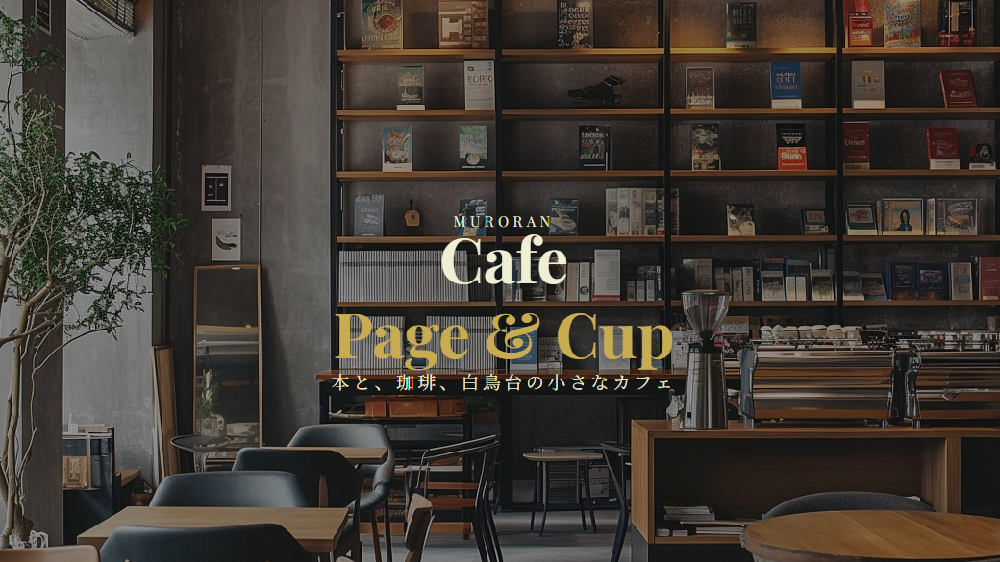
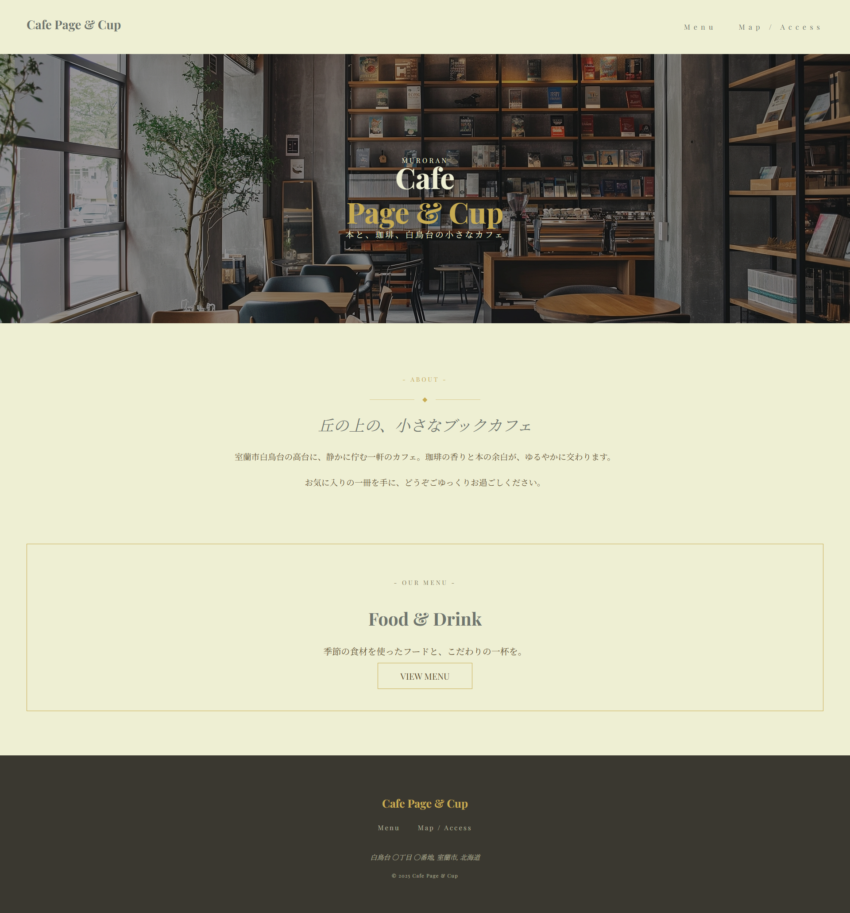
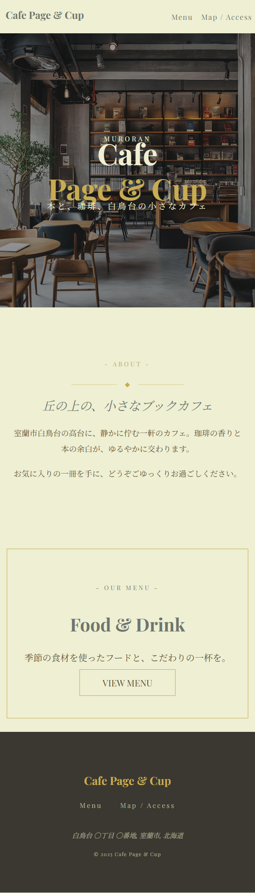

About
落ち着いた時間を過ごせるブックカフェをイメージした架空サイト。
静かに過ごせる空間をテーマに、余白や配色、タイポグラフィで「落ち着き」を表現しました。
Purpose
ターゲットは２０〜４０代の落ち着いた時間を求めるユーザー。
初めて訪れる方でも安心して来店できるよう、視認性と導線設計を意識しました。
Design


Highlights
- コンセプト・カラー・フォント選定から携わり、デベロッパーツールで構造を読み解きながらHTMLとCSSを自分でコーディング
- line-height・letter-spacing・paddingを細かく調整し、視覚的に落ち着きを感じられるレイアウトに設計
- Flexboxで要素の配置バランスを整え、シンプルながらも統一感のあるビジュアルを意識
Coding
クラス設計では役割ごとに整理し、可読性と保守性を意識してコーディングしました。
レイアウトはFlexboxを用いて構築し、画面幅に応じて崩れない構造にしています。
Tech Stack
- HTML
- CSS
- Flexbox
- CSS変数
- Media Query
Links